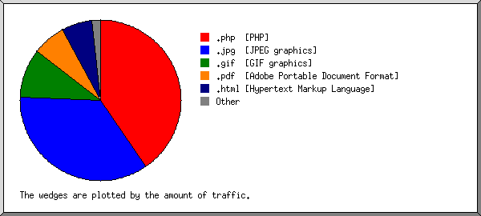

(Go To: Top: General Summary: Daily Report: Daily Summary: Hourly Summary: Organisation Report: Referrer Report: Browser Summary: Operating System Report: Status Code Report: File Size Report: File Type Report: Directory Report: Failure Report: Request Report)
This report contains overall statistics.
(Figures in parentheses refer to the 7-day period ending
14-Jul-2003 03:09).
Successful requests: 14 (1)
Average successful requests per day: 1
Successful requests for pages: 10 (1)
Failed requests: 2 (0)
Redirected requests: 1 (0)
Distinct files requested: 8 (1)
Distinct hosts served: 4 (1)
Data transferred: 49.213 kilobytes (904 bytes)
Average data transferred per day: 5.262 kilobytes (129 bytes)
(Go To: Top: General Summary: Daily Report: Daily Summary: Hourly Summary: Organisation Report: Referrer Report: Browser Summary: Operating System Report: Status Code Report: File Size Report: File Type Report: Directory Report: Failure Report: Request Report)
This report lists the activity in each day.
Each unit ( ) represents 1 request
for a page.
) represents 1 request
for a page.
date: reqs: pages: kbytes: ---------: ----: -----: -------: 2/Jul/03: 11: 7: 46.565:Busiest day: 2/Jul/03 (7 requests for pages).3/Jul/03: 0: 0: 0.000: 4/Jul/03: 0: 0: 0.000: 5/Jul/03: 2: 2: 1.765:
6/Jul/03: 0: 0: 0.000: 7/Jul/03: 0: 0: 0.000: 8/Jul/03: 0: 0: 0.000: 9/Jul/03: 0: 0: 0.000: 10/Jul/03: 0: 0: 0.000: 11/Jul/03: 1: 1: 0.882:
(Go To: Top: General Summary: Daily Report: Daily Summary: Hourly Summary: Organisation Report: Referrer Report: Browser Summary: Operating System Report: Status Code Report: File Size Report: File Type Report: Directory Report: Failure Report: Request Report)
This report lists the total activity for each day of the week, summed over all the weeks in the report.
Each unit ( ) represents 1 request
for a page.
) represents 1 request
for a page.
day: reqs: pages: ---: ----: -----: Sun: 0: 0: Mon: 0: 0: Tue: 0: 0: Wed: 11: 7:
(Go To: Top: General Summary: Daily Report: Daily Summary: Hourly Summary: Organisation Report: Referrer Report: Browser Summary: Operating System Report: Status Code Report: File Size Report: File Type Report: Directory Report: Failure Report: Request Report)
This report lists the total activity for each hour of the day, summed over all the days in the report.
Each unit ( ) represents 1 request
for a page.
) represents 1 request
for a page.
hour: reqs: pages: ----: ----: -----: 0: 1: 1:
(Go To: Top: General Summary: Daily Report: Daily Summary: Hourly Summary: Organisation Report: Referrer Report: Browser Summary: Operating System Report: Status Code Report: File Size Report: File Type Report: Directory Report: Failure Report: Request Report)
This report lists the organisations of the computers which requested files.

Listing organisations, sorted by the number of requests.
reqs: %bytes: organisation ----: ------: ------------ 9: 83.58%: 203.200 3: 12.83%: 202.56 1: 1.79%: 168.209 1: 1.79%: 155.239
(Go To: Top: General Summary: Daily Report: Daily Summary: Hourly Summary: Organisation Report: Referrer Report: Browser Summary: Operating System Report: Status Code Report: File Size Report: File Type Report: Directory Report: Failure Report: Request Report)
This report lists the referrers (where people followed links from, or pages which included this site's images).
Listing referring URLs with at least 20 requests, sorted by the number of requests.
reqs: URL ----: --- 6: [not listed: 3 URLs]
(Go To: Top: General Summary: Daily Report: Daily Summary: Hourly Summary: Organisation Report: Referrer Report: Browser Summary: Operating System Report: Status Code Report: File Size Report: File Type Report: Directory Report: Failure Report: Request Report)
This report lists the vendors of visitors' browsers.

Listing browsers with at least 1 request for a page, sorted by the number of requests for pages.
no.: reqs: pages: browser ---: ----: -----: ------- 1: 5: 5: MSIE : 4: 4: MSIE/5 : 1: 1: MSIE/6 2: 9: 5: Opera : 9: 5: Opera/7
(Go To: Top: General Summary: Daily Report: Daily Summary: Hourly Summary: Organisation Report: Referrer Report: Browser Summary: Operating System Report: Status Code Report: File Size Report: File Type Report: Directory Report: Failure Report: Request Report)
This report lists the operating systems used by visitors.

Listing operating systems, sorted by the number of requests for pages.
no.: reqs: pages: OS ---: ----: -----: -- 1: 9: 5: Unix : 9: 5: Linux 2: 5: 5: Windows : 3: 3: Windows 2000 : 1: 1: Windows 98 : 1: 1: Windows XP
(Go To: Top: General Summary: Daily Report: Daily Summary: Hourly Summary: Organisation Report: Referrer Report: Browser Summary: Operating System Report: Status Code Report: File Size Report: File Type Report: Directory Report: Failure Report: Request Report)
This report lists the HTTP status codes of all requests.

Listing status codes, sorted numerically.
reqs: status code ----: ----------- 14: 200 OK 1: 301 Document moved permanently 2: 404 Document not found
(Go To: Top: General Summary: Daily Report: Daily Summary: Hourly Summary: Organisation Report: Referrer Report: Browser Summary: Operating System Report: Status Code Report: File Size Report: File Type Report: Directory Report: Failure Report: Request Report)
This report lists the sizes of files.

size: reqs: pages: kbytes:
----------: ----: -----: -------:
0: 0: 0: 0.000:
1b- 10b: 0: 0: 0.000:
11b- 100b: 0: 0: 0.000:
101b- 1kb: 5: 5: 4.414:
1kb- 10kb: 7: 3: 21.550:
10kb-100kb: 2: 2: 23.249:
(Go To: Top: General Summary: Daily Report: Daily Summary: Hourly Summary: Organisation Report: Referrer Report: Browser Summary: Operating System Report: Status Code Report: File Size Report: File Type Report: Directory Report: Failure Report: Request Report)
This report lists the extensions of requested files.

Listing extensions with at least 0.1% of the traffic, sorted by the amount of traffic.
reqs: %bytes: extension ----: ------: --------- 8: 49.45%: [directories] 2: 32.08%: .html [Hypertext Markup Language] 4: 18.47%: .png [PNG graphics]
(Go To: Top: General Summary: Daily Report: Daily Summary: Hourly Summary: Organisation Report: Referrer Report: Browser Summary: Operating System Report: Status Code Report: File Size Report: File Type Report: Directory Report: Failure Report: Request Report)
This report lists the directories from which files were requested. (The figures for each directory include all of its subdirectories.)

Listing directories with at least 0.01% of the traffic, sorted by the amount of traffic.
reqs: pages: kbytes: directory ----: -----: -------: --------- 7: 3: 39.369: /~xmec/ 7: 7: 9.844: [root directory]
(Go To: Top: General Summary: Daily Report: Daily Summary: Hourly Summary: Organisation Report: Referrer Report: Browser Summary: Operating System Report: Status Code Report: File Size Report: File Type Report: Directory Report: Failure Report: Request Report)
This report lists the files that caused failures, for example files not found.
Listing files, sorted by the number of failed requests.
reqs: file ----: ---- 2: /favicon.ico
(Go To: Top: General Summary: Daily Report: Daily Summary: Hourly Summary: Organisation Report: Referrer Report: Browser Summary: Operating System Report: Status Code Report: File Size Report: File Type Report: Directory Report: Failure Report: Request Report)
This report lists the files on the site.
Listing files with at least 20 requests, sorted by the number of requests.
reqs: kbytes: last time: file ----: -------: ---------------: ---- 14: 49.213: 11/Jul/03 09:41: [not listed: 8 files]
(Go To: Top: General Summary: Daily Report: Daily Summary: Hourly Summary: Organisation Report: Referrer Report: Browser Summary: Operating System Report: Status Code Report: File Size Report: File Type Report: Directory Report: Failure Report: Request Report)